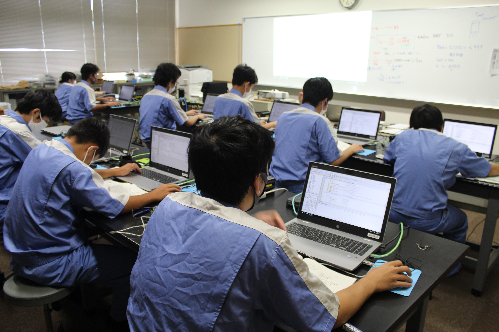
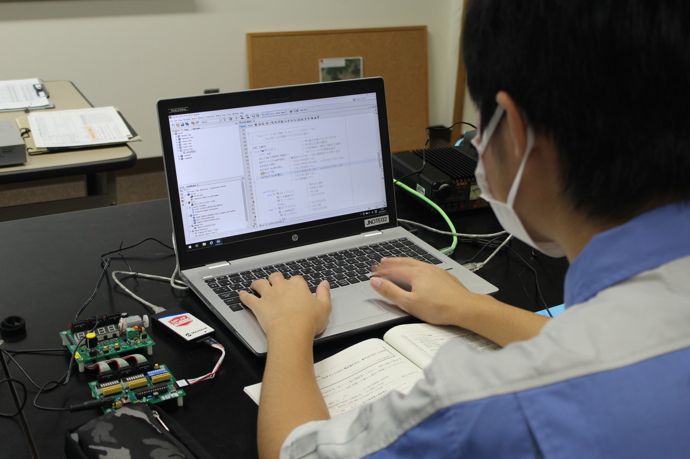
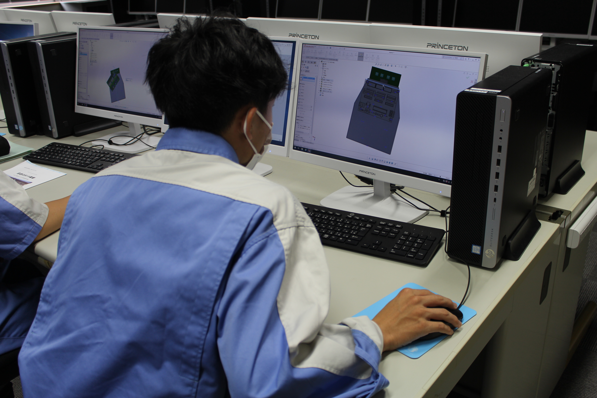
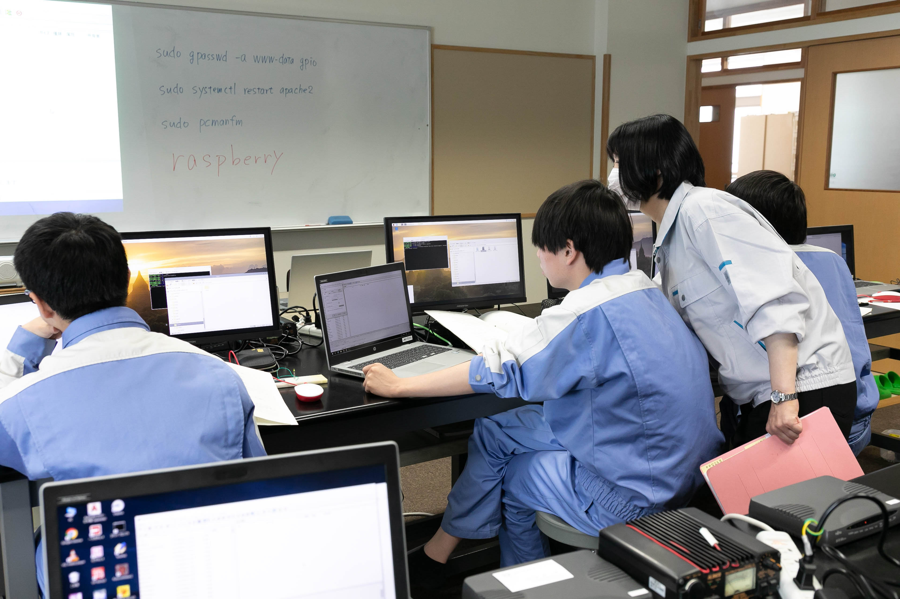

プログラミング
コンピュータを自由に操るためには、プログラミングは必要不可欠です。
C言語を中心に基礎的なプログラミング学習に力を入れ、情報技術検定２級の全員合格を目指します。

コンピューターによる電子制御技術
自動車や家電製品、工場の自動設備などでは、コンピューターを
使った電子制御が行われています。マイコン制御、ロボットや
シーケンス装置を使った実習を通して制御技術の基礎を学び、
技能検定の受験につなげます。

マルチメディア CAD
コンピューターグラフィックスをはじめとするマルチメディア
技術や3D-CAD(コンピューターによる3次元設計・デザイン)に
ついて、本格的なツールを使った学習を行います。

ネットワーク技術
ホームページ作成・情報セキュリティなどのシステム管理の基礎や、インターネットなどのネットワークシステムに関する技術に
ついて学習し、基本情報技術者国家試験の受験につなげます。
